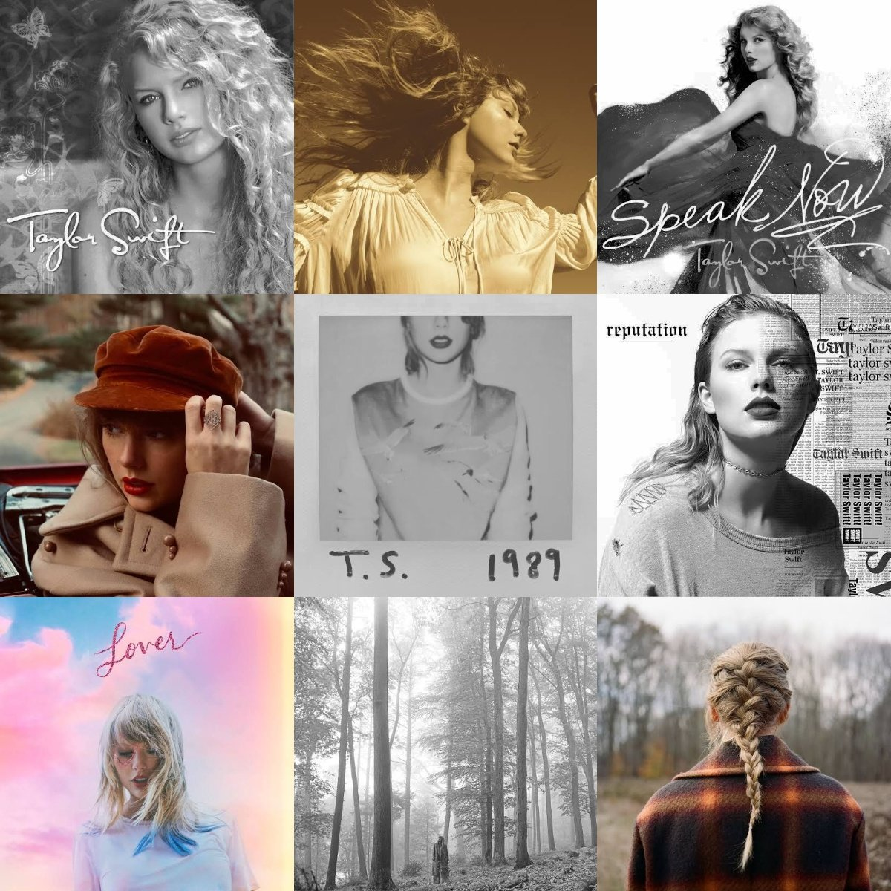

Premios
Taylor a lo largo de su carrera ha sido nomibada a varios premios.
A los premios Grammy, American Music awards, Billboard Music Awards.

Discografia
La discografía de Taylor Swift, cantante estadounidense de géneros country y pop, está conformada por diez álbumes de estudio y dos regrabados.
Entre algunos de ellos. Lover, Reputation, Red Taylor Versions y Midnights.
Filmografia
Taylor grabo una pelicula domuental que cubre serie d eventos de su vida.
Miss American.